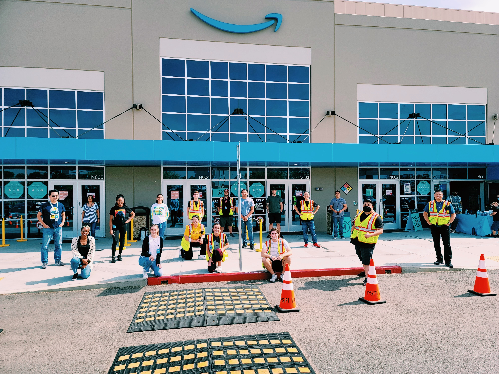

Most Recent Experiences
Data Collector: Institute for Research on Poverty
The Institute for Research on Poverty is a research institution on the UW-Madison Campus dedicated to producing and communicating rigous evidence to inform policies and programs to combat poverty, inequality, and their effects in the United States. I have been working at IRP since May of 2020. As a student data collector, I am responsible for tabulating all they data we receive into clear and actionable reports that detail our poverty statistics for fellow researchers.
Operations Intern: Amazon
Amazon Operations is at the heart of the companies mission to be Earth's most customer-centric company. I completed my 10 week internship during the summer of 2021. As an operations intern, I spent the first half of my experience learning the role of operations within Amazon and spent the second half of my experience completing an internship project. My project was focussed on launching a site-wide logistics program that addressed barriers regarding site communication, shift planning, and workstation readiness. The program is still in use at the site by over 3,000 Amazon associates.
Student Program Manager: Center for Professional and Executive Development
The Center for Professional and Executive Development offers over 70 professional development programs aimed at helping individuals and organizations move forward. I worked at CPED from September 2019 - May 2020. As a student program manager, I was in charge of constructing and documenting all necessary information for the courses offered. In addition, I trained and mentored incoming students by sharing my knowledge on standard methodologies, work instructions, and process documentation to maintain consistent and seamless company operations.
Extracurriculars
Women in Economics
Badger Volunteers
Mind Body Badger
LEAD@Econ

Skills:
Data Analysis
Problem Solving
Critical Thinking
Python, SQL, R, & STATA